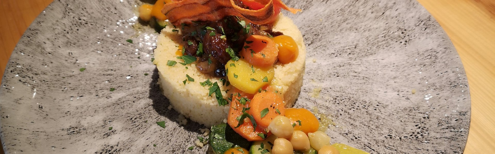
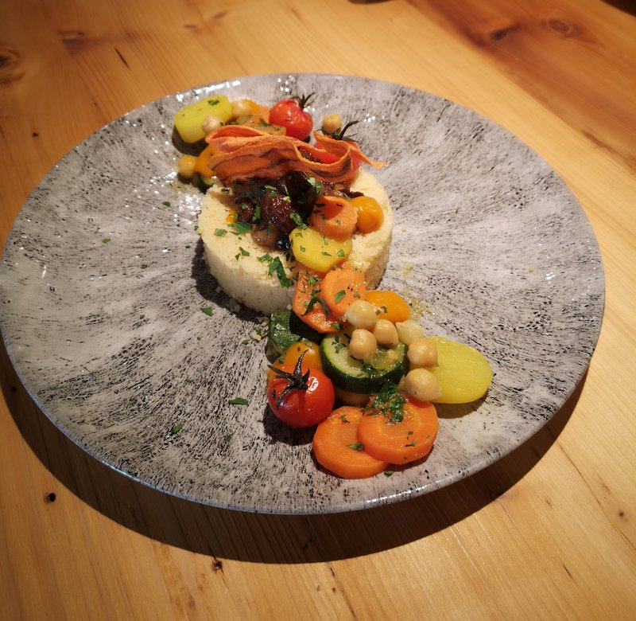

Moroccan couscous
As an Amazon Associate, I earn from qualifying purchases
Ingredients
- 500 g meat of choice: chicken, lamb, veal or beef
- 2 tsp olive oil
- 1 piece of onions
- 1 tsp tomato paste
- 4 stalks of coriander
- 4 stalks of parsley
- 200 g chickpeas (soaked overnight or canned)
- 1 piece of tomatoes
- 1 piece of zucchini
- 1 piece of rutabaga
- 300 g pumpkin
- 3 potatoes
- 3 pieces of carrots
spices:
- 1 tsp salt
- 0.5 tsp ground ginger
- 0.5 tsp turmeric or pinch of saffron
- 0.5 tsp ground pepper or a spice mix
For the couscous:
- 500 g Couscous
- 500 ml water or broth
- 0.5 tsp salt.
- 100 g butter
Preparation

Soak the chickpeas overnight, then drain them in a colander and drain them.
Peel the onions and cut them into small pieces. Wash and cut the vegetables. Carrots, potatoes, turnips and zucchini are best halved lengthwise and cut into 10 cm long pieces. The pumpkin is roughly cut into pieces.
Cut the meat into pieces.
In einem großen Topf etwas Öl erhitzen und das Fleisch mit der Zwiebeln bis glasig und unter ständigen Rühren anbraten. Gewürze, Kichererbsen, Tomatenmark und das Wasser oder Brühe zufügen und alles bei schwacher bis mittlerer Hitze etwa 1-2 Stunden köcheln lassen.
Wash the coriander and parsley, shake dry.
To add the prepared vegetables with longer cooking time carrots, rutabaga, potatoes and bound coriander and parsley to the pot.
These ingredients are poured with hot water and brought to a boil over medium heat.
Meanwhile, prepare the couscous, pour the hot broth or water over the couscous and let it soak with the lid closed. After 10 minutes, fluff the couscous with a fork and add the butter.
Add vegetables with shorter cooking time to the pot (pumpkin, zucchini and tomato pieces), leaving everything over moderate heat until it softens.
Season the sauce to taste and mix the finished couscous with the vegetables, put the meat on top and pour a little sauce over it and arrange on a platter.
Guten Appetit!